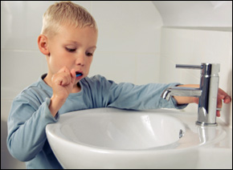
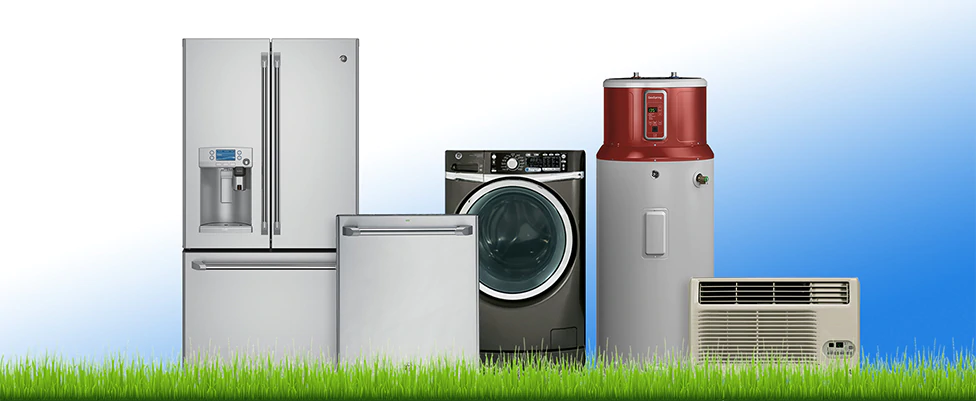

What is water?
Water is one of the most abundant compound on the earth. It has a very simple chemical composition (H20) and everyone knows about it. However, there is alot more to this compound than what meets the eye.
Why is water important?
What do you think makes the earth unique? It is water! Water supports all life and life is not possible without water. Believe it or not, 70% of human body is water. 99% of all biosphere is in the ocean. Alongside humans, millions of other species depend on water.
Water Pollution & Other Problems

Water pollution is a major problem. Around 3-4 million people die every year due to water realted diseases. Around 100 million aqauatic animals die every year! Many species are on the brink of extinction.
Why you should conserve water
Now you might be thinking, "Yeah, so what? I don't pollute water". That thinking is absolutely wrong! You have to conserve water judiciously. It is so because in a bad world, It is not enough to be 'Not bad', You have to be as good as possible.
Ways to conserve water:

Check for leaks in your bathroom pipes. Leaking pipes may waste more than 50 litres a day! The Pipe leakeage should be checked. If there is a lot leakage you can repair. Old pipes should be removed with new ones.

Do Rain Water Harvesting. Use rain water to wash fruits and vegetables. The easiest way to harvest rain is through a rain barrel (make your own from a large trash can or an old drum) linked to a pipe fitted to collect rainwater from the rooftop and verandah of the house.
Stop using shower! Shower use more than double the amount of water than with a bucket. Most of the water falls down and is wasted. Use a bucket intead. It will even help you to wash fast!

Turn off the faucet while brushing your teeth or shaving. While you are brushing no water is needed. It just waste the water. The water wasted if faucet is on is even much. So the faucet should be off while brushing as much water is wasted.

Use dishwasher and washing machine for full loads only. Washing machine uses a tons of water while washing clothes. And washing utensils with water is also effects. Using a dishwasher will prevent this.
Stop flushing waste in toilet. Each flush uses more than 10 litres of water and it blocks pipes which lead to clogging. Clogging in pipes further wastes water A lot. Most of the water gets stucked in garbage.
Man is a complex creature he makes deserts bloom and lakes die.
- Gil Scott-Heron
Conserve Water. Future generations will Thank youüôè.